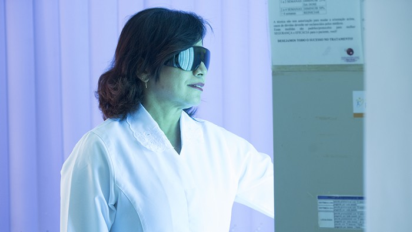

Início · Fototerapia
Fototerapia: a luz usada como tratamento médico.
A fototerapia usa faixas escolhidas da luz ultravioleta, em cabine, com doses controladas. É o tratamento que dá nome à Clínica Luz. A indicação é individual, definida em consulta.

Entenda
O que é fototerapia
“Fototerapia é a utilização da luz para tratamentos médicos. Essa luz pode ser a luz natural do sol ou através de lâmpadas artificiais que emitem a luz na radiação específica desejada para aquele determinado tratamento e doença.”Texto da Clínica Luz · clinicaluz.com.br
Na dermatologia, a luz ultravioleta age sobre as células da pele envolvidas na inflamação e, no vitiligo, também estimula os melanócitos. Por isso ela pode ajudar a controlar doenças em que a pele está inflamada ou perdeu pigmento.
Segundo o texto da clínica, o tratamento tem amplo reconhecimento científico e evita, muitas vezes, o uso de medicações mais agressivas e menos toleradas.

As faixas
UVB banda estreita e PUVA
UVB banda estreita (cerca de 311 nm)
Uma faixa estreita do ultravioleta B. É a forma mais usada hoje, em sessões curtas e progressivas, duas a três vezes por semana na maioria dos esquemas.
PUVA (psoraleno + UVA)
O ultravioleta A associado a um medicamento que torna a pele mais sensível à luz (psoraleno). Pede cuidados próprios com os olhos e com o sol no dia da sessão.
Áreas localizadas
Em algumas situações, a luz pode ser aplicada só nas áreas afetadas, como mãos e pés.
Quem escolhe
O tipo de luz, a dose inicial e a frequência são definidos pela dermatologista, depois da avaliação.
O tipo de fototerapia e a duração do tratamento dependem da doença, da área e de outras características avaliadas na consulta.
Indicações
Para quais condições
“No campo da Dermatologia, a fototerapia é indicada para várias dermatoses, principalmente para psoríase, vitiligo, dermatite atópica e linfoma cutâneo de células T primário de pele.”Texto da Clínica Luz · clinicaluz.com.br
A fototerapia costuma ser combinada com outros tratamentos, como medicamentos de uso na pele ou por via oral. O plano é sempre definido em consulta.
Na cabine
Como é a sessão
- Consulta e planoAvaliação da pele, do histórico e dos medicamentos em uso; definição do tipo de luz e da dose inicial.
- ProteçãoÓculos de proteção dentro da cabine; áreas que não devem receber luz ficam protegidas, conforme a orientação.
- Na cabineA exposição dura pouco tempo, de segundos a alguns minutos, e a dose aumenta aos poucos, conforme a resposta da pele.
- RegularidadeAs sessões seguem uma frequência combinada; faltar com frequência atrasa o tratamento.
- RetornosA dermatologista acompanha a evolução e ajusta a dose e a duração do tratamento.
Cuidados
Cuidados durante o tratamento
- Avise a equipe sobre qualquer medicamento novo: alguns tornam a pele mais sensível à luz.
- Use os óculos de proteção na cabine, como orientado.
- Evite sol extra nos dias de sessão e use filtro solar nas áreas expostas, conforme a orientação.
- Vermelhidão leve pode acontecer; ardor, bolhas ou vermelhidão forte devem ser comunicados à equipe antes da próxima sessão.
- Gravidez, histórico de câncer de pele e doenças que pioram com a luz precisam ser informados na consulta.
A fototerapia é feita com indicação e acompanhamento da dermatologista, com doses registradas sessão a sessão.
Parâmetros
O Manual Prático de Fototerapia da SBD
Em 2020, a Sociedade Brasileira de Dermatologia lançou o Manual Prático de Fototerapia, com parâmetros para o uso correto da fototerapia nos serviços de dermatologia. A coordenação geral foi da Dra. Ivonise Follador, da UFBA, e do então presidente da SBD, Sérgio Palma.
“Devem ser orientados e preparados para atuarem com cuidado e dedicação, adotando, igualmente, postura ética e humanizada na sua relação com pacientes e outros profissionais.”Dra. Ivonise Follador, sobre os técnicos que operam as cabines · notícia da SBD
Dúvidas frequentes
Perguntas comuns
Fototerapia é o mesmo que tomar sol?
Não. Na cabine, lâmpadas especiais emitem só a faixa de luz escolhida, com dose medida e controlada pela equipe.
Quantas sessões são necessárias?
Depende da doença, da área e da resposta da pele. A frequência e a duração do tratamento são definidas em consulta e revistas nos retornos.
A sessão dói?
A exposição em si não costuma doer. Pode haver vermelhidão leve depois; qualquer reação mais forte deve ser comunicada à equipe.
Preciso de pedido médico?
A fototerapia é um tratamento médico: começa com a avaliação da dermatologista, que define a indicação e o plano.
Agende
Uma consulta na Clínica Luz, em Ondina.
CME — Centro Médico e Empresarial, Av. Anita Garibaldi, 1815, bloco B, sala 412. Atendimento com hora marcada: confirme dia e horário com a equipe pelo WhatsApp ou pelos telefones.